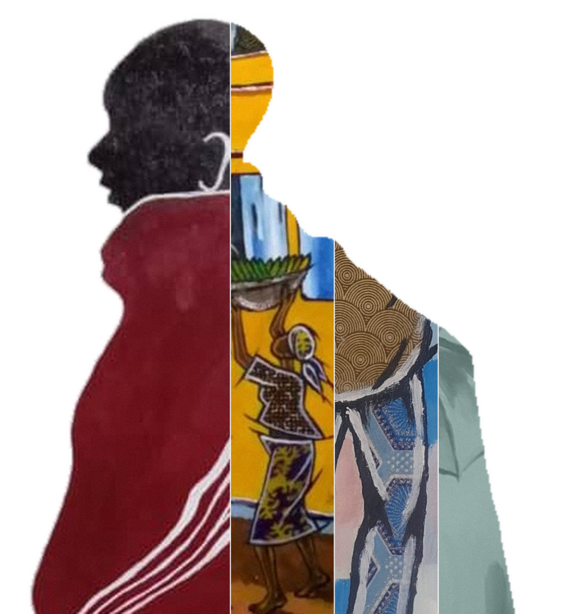

THIS YEAR, 2024, I WAS SELECTED TO REPRESENT TANZANIA AT ONE OF THE WORLD'S GREAT EXHIBITIONS, THE VENICE BIENNALE, AND TRAVELLED TO ITALY FOR THE OPENING.

TZ—2024
Painting for 32 years
Acrylic · kitenge · woodcut
Artist · Voice of Piece
Lutengano Mwakisopile
Dar es Salaam
2024
“This year, 2024, I was selected to represent Tanzania at one of the world’s great exhibitions, the Venice Biennale, and travelled to Italy for the opening.”
In the artist's words작가의 말Kwa maneno ya msanii
About the work작품 이야기Kuhusu kazi
Translated from the artist's own answers in Kiswahili, lightly edited for clarity.
작가가 스와힐리어로 직접 쓴 답변을 옮기고 읽기 쉽게 다듬었습니다.
Kwa maneno ya msanii mwenyewe, yamehaririwa kidogo ili yasomeke vizuri.
How it began시작Nilivyoanza
I joined Nyumba ya Sanaa in 1992 as a salaried artist. After seven years I went independent, later worked from a studio at Nafasi Art Space, and today I have a studio of my own.
1992년 ‘Nyumba ya Sanaa’에 전속 화가로 들어갔습니다. 7년 뒤 독립해 Nafasi Art Space에 작업실을 얻었고, 지금은 제 작업실을 운영하고 있습니다.
Nilijiunga na Nyumba ya Sanaa mwaka 1992 kama msanii mwajiriwa. Baada ya miaka saba nikawa msanii wa kujitegemea, baadaye nikapata studio katika Nafasi Art Space, na sasa nina studio yangu mwenyewe.
What I paint그리는 것Ninachochora
Everyday life in our communities, and politics. I paint in acrylic, and I also make woodcut prints and illustrations.
우리 사회의 일상과 정치를 그립니다. 아크릴로 그리고, 목판화와 일러스트레이션 작업도 합니다.
Ninapenda kuchora maisha ya kila siku katika jamii na mambo yanayohusu siasa. Ninachora kwa rangi za akriliki, na pia ninafanya uchapaji wa mbao (woodcut) na vielelezo.
Why I paint그리는 이유Kwa nini ninachora
I had the talent from childhood, and my two older brothers were painters who travelled abroad often for exhibitions. That drew me in even more.
어릴 때부터 재능이 있었고, 화가였던 두 형이 전시를 위해 해외를 자주 다니는 모습을 보며 더욱 끌렸습니다.
Nilikuwa na kipaji tangu nikiwa mdogo, lakini pia kaka zangu wawili walikuwa wachoraji na walikuwa wakisafiri sana nje ya nchi kufanya maonesho, hivyo nikavutiwa zaidi.
How I work작업 방식Jinsi ninavyofanya kazi
When I see or hear news about our society, I sketch it on paper, then carry it onto canvas — or onto wood for engraving.
사회에 관한 소식을 보거나 들으면 종이에 스케치하고, 그것을 캔버스로, 혹은 판화를 위해 나무판으로 옮깁니다.
Nikiona au nikisikia habari yoyote inayohusu jamii, ninachora mchoro wa awali kwenye karatasi, kisha ninauhamishia kwenye turubai au kwenye mbao kwa ajili ya kuchonga.
What moves me영감Kinachonihamasisha
My art has no limits — I take on every kind of event, but above all what is happening in society.
제 그림에는 경계가 없습니다. 어떤 사건이든 다루지만, 무엇보다 지금 사회에서 일어나는 일을 그립니다.
Sanaa yangu haina mipaka; ninafanya matukio yote, lakini hasa matukio yanayoendelea katika jamii.
Materials재료Vifaa
For paintings I use acrylic with pieces of kitenge cloth, sacking, sisal rope and glue. For carving and printing, wood and knives.
회화에는 아크릴과 함께 키텡게 천 조각, 마대, 사이잘 밧줄, 접착제를 씁니다. 판화에는 나무와 조각칼을 씁니다.
Katika uchoraji ninatumia rangi za akriliki pamoja na vipande vya kitambaa cha kitenge, gunia, kamba ya katani na gundi. Katika kuchonga na kuchapa ninatumia mbao na visu.
A work I love아끼는 작품Kazi ninayoipenda
A series about people selling goods by the roadside to travellers. People loved it. I used acrylic, pieces of kitenge, sacking, sisal rope and glue.
길가에서 여행자들에게 물건을 파는 사람들을 그린 연작입니다. 많은 사랑을 받았습니다. 아크릴, 키텡게 천 조각, 마대, 사이잘 밧줄, 접착제를 사용했습니다.
Kazi ninayoipenda ni mfululizo wa michoro ya wauzaji wa bidhaa mbalimbali barabarani kwa wasafiri. Ilipendwa sana na watu. Nilitumia rangi za akriliki, vipande vya kitenge, gunia, kamba ya katani na gundi.
Looking ahead앞으로의 꿈Malengo yangu
To open my own gallery to support young artists, and to take part in the Venice Biennale again.
젊은 화가들을 돕는 저만의 갤러리를 여는 것, 그리고 베니스 비엔날레에 다시 참여하는 것입니다.
Kuwa na gallery yangu ya sanaa ili kuwasaidia wasanii wachanga, na kushiriki tena kwenye Venice Biennale.
Record
Exhibitions & recognition
Exhibitions
Venice Biennale, Italy — 2024
Denmark · Switzerland · Germany · Sweden
Malta · Egypt · Bangladesh
Kenya · Uganda · Rwanda
Many exhibitions across Tanzania
Recognition
First prize, Oscars of African Creativity — Cairo, Egypt, 2019
Roles
Chairman, Tanzania Painters Association (Chama cha Wasanii Wachoraji Tanzania)
Chairman, 14+ Artists
Selected works
The gallery
9 works
Voice of Piece
Interested in Lutengano's work?
Write to us and we will connect you with the artist. Every sale is made on fair terms, with the artist credited and paid.